Paso 01
Captura con papel cebolla
Cada cuadro se guarda al instante, incluso sin internet.
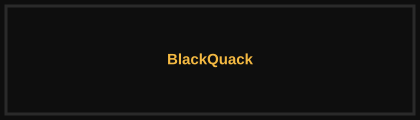
Cuadro 01 / 08Enseñar y experimentar la animación cuadro a cuadro en el aula, con las tablets y celulares del colegio convertidos en estaciones de trabajo seguras.
Funciona mejor en un teléfono o tablet Android con Chrome. Prototipo v0.1.0.
Crear requiere tiempo. La tecnología debe hacerlo posible.
La iniciativa propone desarrollar una plataforma digital orientada a facilitar la enseñanza y experimentación de la animación cuadro a cuadro en contextos educativos, promoviendo el pensamiento creativo, la expresión artística y el uso significativo de la tecnología en el aula.
Para lograrlo, convierte las tablets y celulares del colegio en estaciones de trabajo seguras: sin publicidad, sin salidas a otras apps y sin depender de internet, donde niños y niñas de 8 a 12 años crean solos o en grupo mientras el docente acompaña el proceso de cada uno.
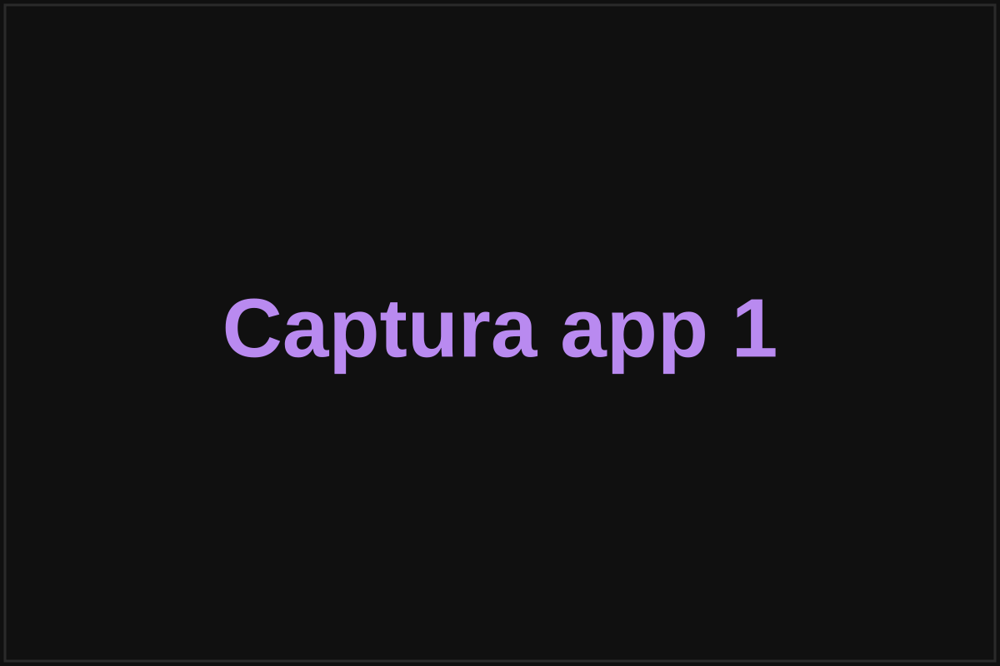
Paso 01
Cada cuadro se guarda al instante, incluso sin internet.
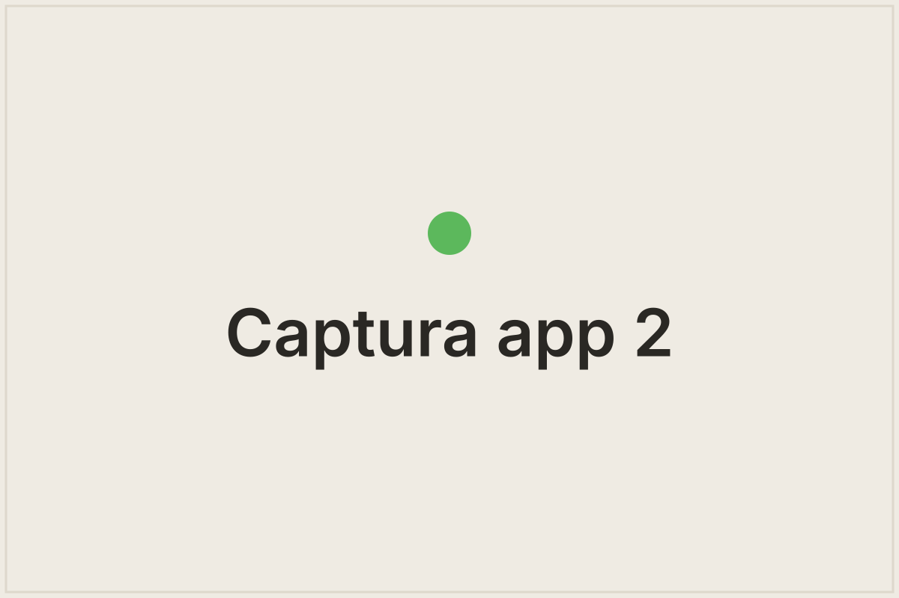
Paso 02
Reordena, duplica y elige la velocidad (6 a 24 cuadros por segundo).
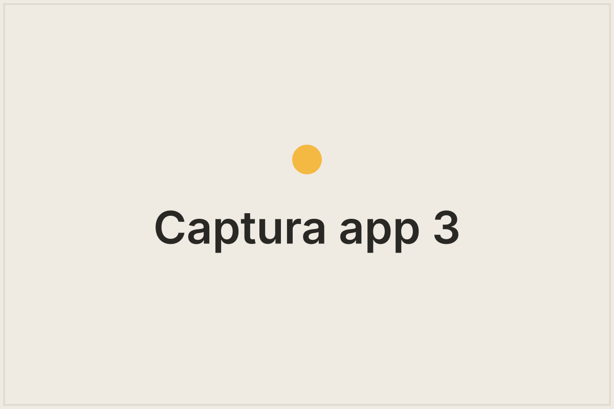
Paso 03
GIF o secuencia de imágenes, con versiones para probar sin perder lo que ya funcionaba.
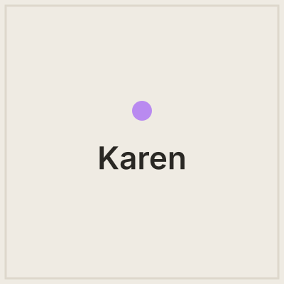
Team Leader, CEO y Business Developer

Fundador, Director Creativo, diseño de producto y desarrollo
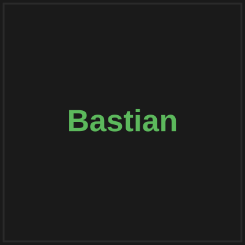
Consultor técnico
Karen y Paulo trabajan juntos desde 2020.
Animakids nace en 2026 en la Región de Valparaíso como el programa de exploración creativa de BlackQuack: niños, niñas y adolescentes exploran la animación con papel, plasticina, recortes, objetos y luz, junto con herramientas desarrolladas por BlackQuack.
No se busca la perfección técnica, sino desarrollar la capacidad de crear, probar, equivocarse, resolver y volver a intentar.
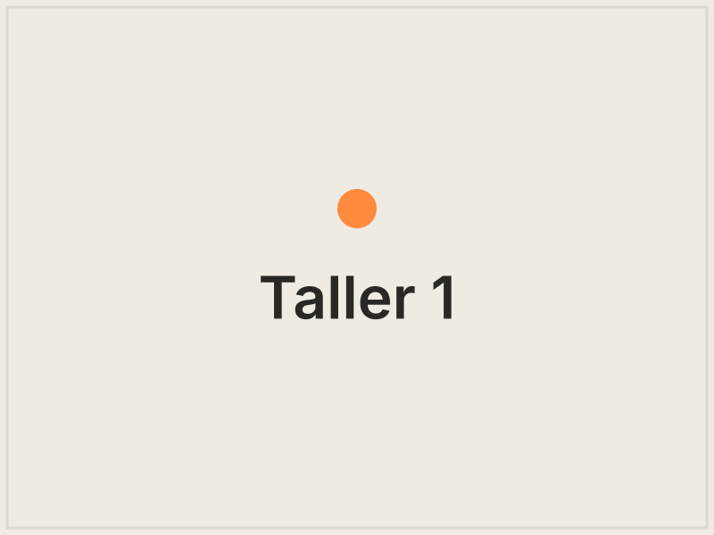
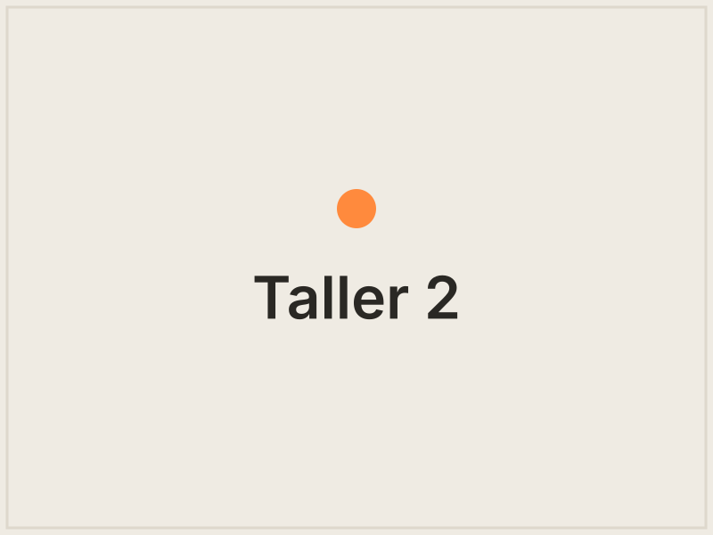
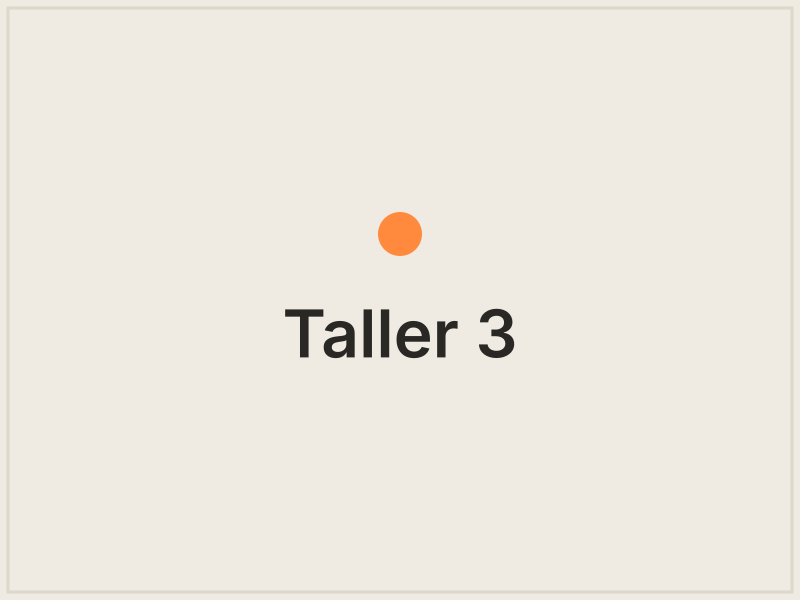
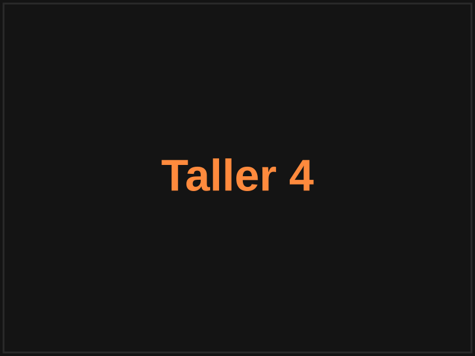
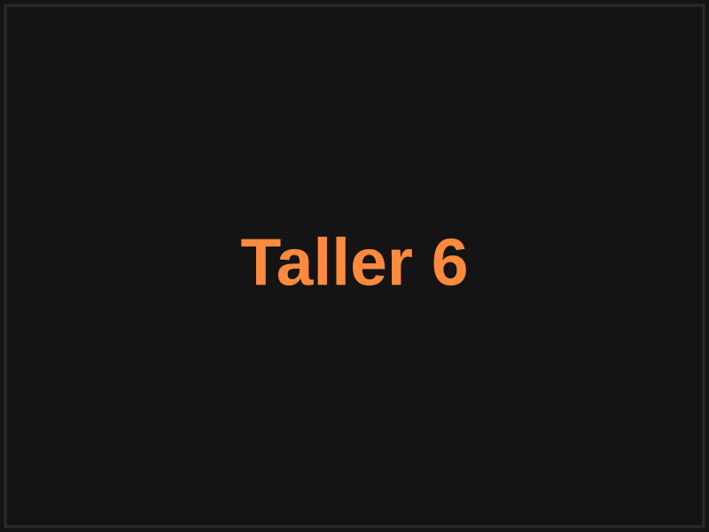
Institución educacional dispuesta a probar la plataforma en su taller de animación.
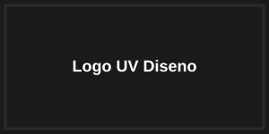
Su dirección manifestó el interés de la Escuela en explorar instancias de colaboración con BlackQuack Studio, reconociendo el potencial de la propuesta para vincular el ámbito universitario y el escolar.
Carta de interés de la Dirección de la Escuela de Diseño, noviembre de 2026.